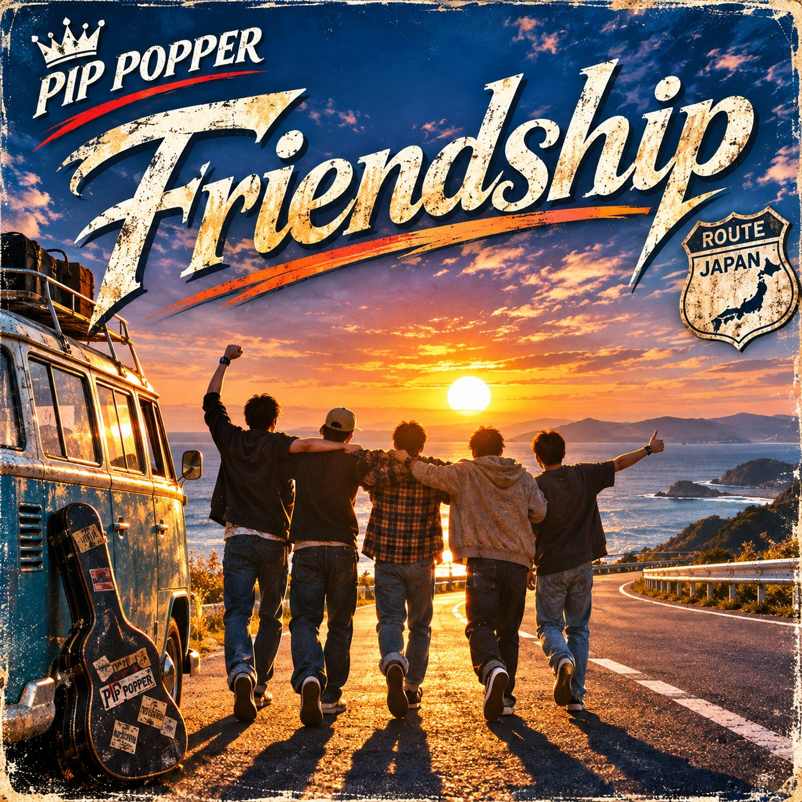

Friendship

07
Friendship
PIP POPPER
AI ImpressionAIの感想
「よみがえる記憶の中」から始まり、メロディアスな歌とラップが交互に思い出をたどっていく友情ソング。「あいつとは合わない」と言いながら、合わせる気がないことまで知っている関係には、無理に足並みをそろえない仲間ならではの気楽さがある。会う頻度が減っても「会ってなくても孤独は感じない」と言い切る言葉に、距離や時間では揺らがない絆がにじむ。九州から日本を縦断する車内で交わしたくだらない冗談や恋愛話、窓の外を流れていく草木の描写は、旅の空気をそのまま運んでくる。セピア色に染まった景色をまっさらなキャンバスに戻し、新しい色を足そうとする後半から、最後の「次はいつ行く？春夏秋冬」へ。懐かしさで終わらず次の旅の約束へと向かう、これからも続いていく友情の歌だ。
Lyrics
よみがえる記憶の中違う視点で問いかけ新たな真実を見つけることを恐れないで
本当に大切な物気付いたときに強くなれる終わらないことを願っているよ共に進もう永遠に
輝いていた過ぎ去った日々笑顔が絶えない 僕らがいるたとえ遠くに離れたとしても必ず戻る場所がここにあるから
刺激し合って共に走った普段見せない部分も知った「あいつとは合わない」言ってるまた合わせる気がねぇって知ってるからそこに俺らが生きるヒント見つけても減っていく会う頻度。でも会わない時間は関係ない。会ってなくても孤独は感じない。でも再会を期待した。そんなたいした 事じゃねけど歌にした。駆け巡る記憶 ランダム走馬灯ように 蘇る絆・未来につないで何気ない疑問もすぐに問いかけ語り明かした 朝日昇るまで
忘れないで輝いた日々笑顔が絶えない 僕らがいるたとえ遠くに離れたとしても必ず戻る場所がここにあるから
まるで昨日のことのように目に浮かぶ俺たちの笑い声が絶え間なく広がる光景をこの先ずっと持っていこう人前でも女泣かしたようなこともあったな確か「あのころはガキだった」大人ぶってみても今もほら 変わらねぇよ周りに合わせて先を急ぐよりyour stance そのままで It's so good時の速さに追いつけないと感じても自分にウソつけないから木を見らず森を見ろそして気の合う仲間 少しの出会いや別れ繰り返すその中で一握りの宝、無くすことなかれ!
ずっと気ままに歩いて行く僕らを縛れるものなど無い暗闇の中 見失ったとしても仲間が照らす場所がそこにあるから
永遠と続く国道走る九州発にほん縦断とことん貶してこれも友情だとか言って交わす冗談くだ らない話の車内にはバカじゃない奴はなじめない遠い距離でも体感時間は最短恋愛話に花が咲いた尽きない話題 飽きない笑いこのメンツの他に変わりはいない窓から見えた流れる草木はすでにセピア色に染まった景色それならキャンパスをまっさらにして新たな色足すかさらに俺はいつでも用意周到だ次はいつ行く？春夏秋冬